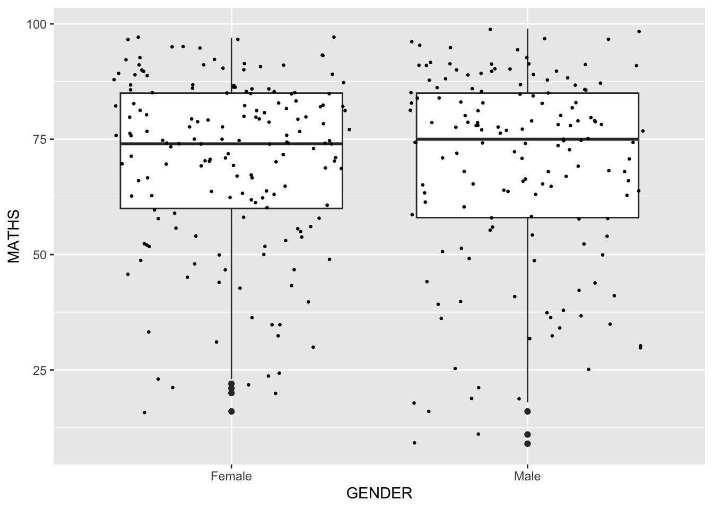
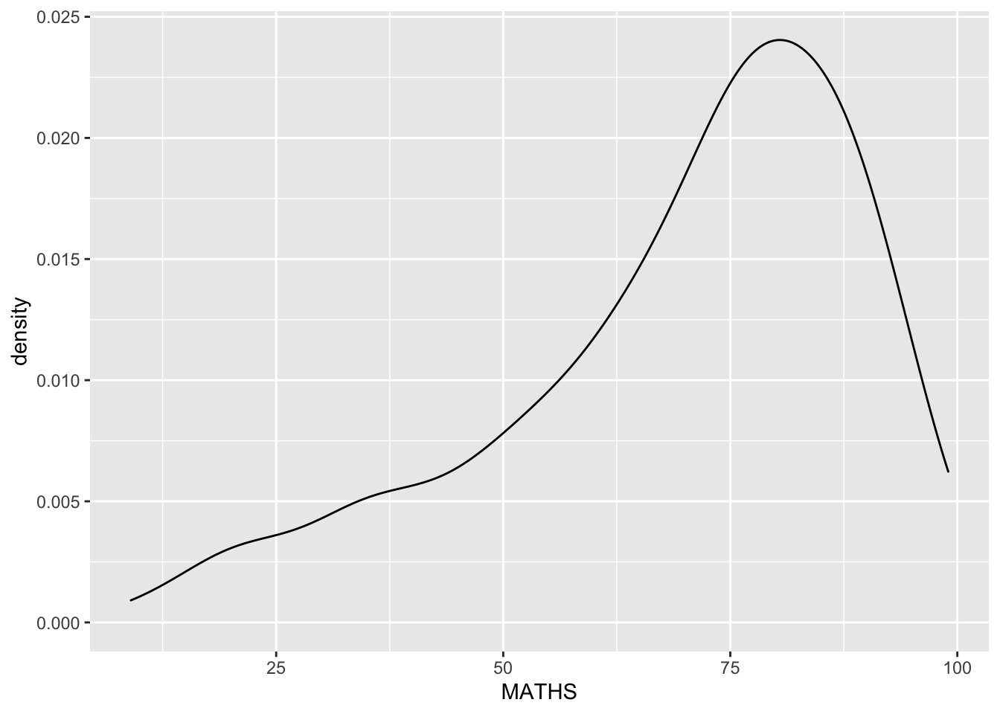
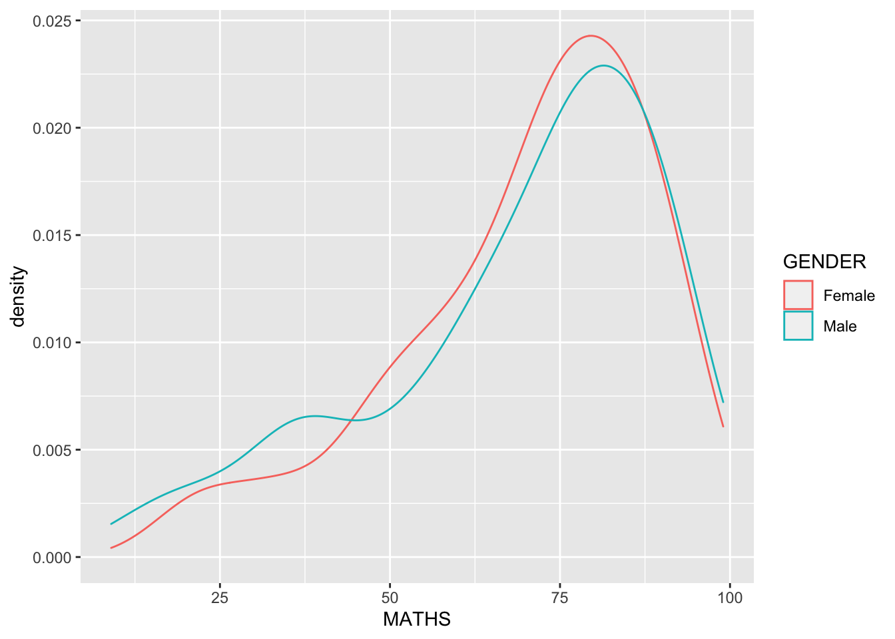
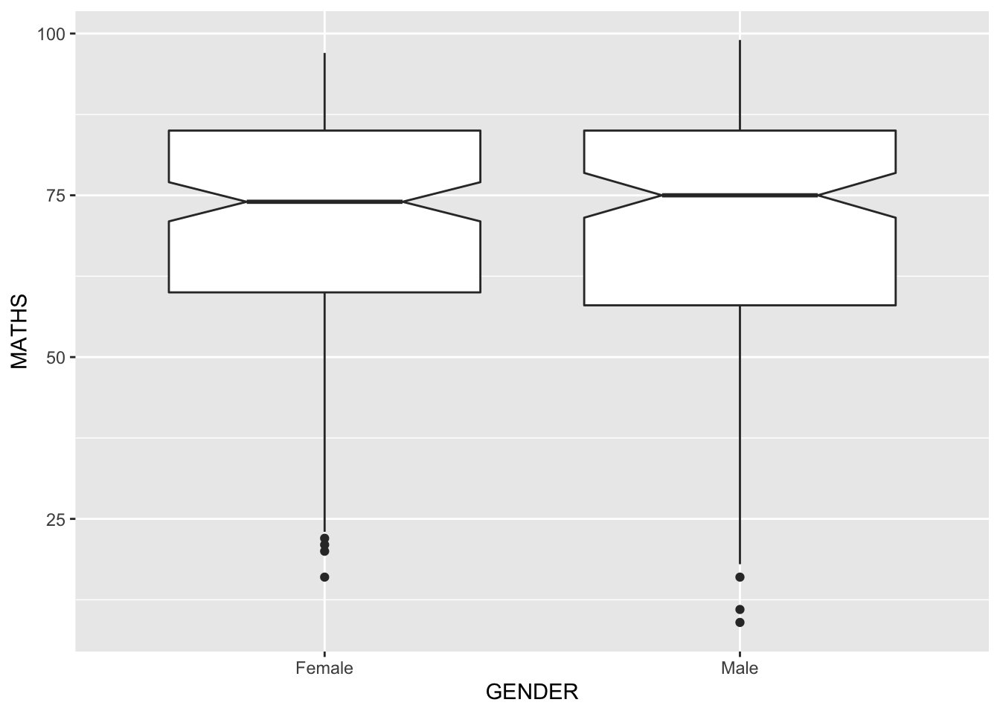
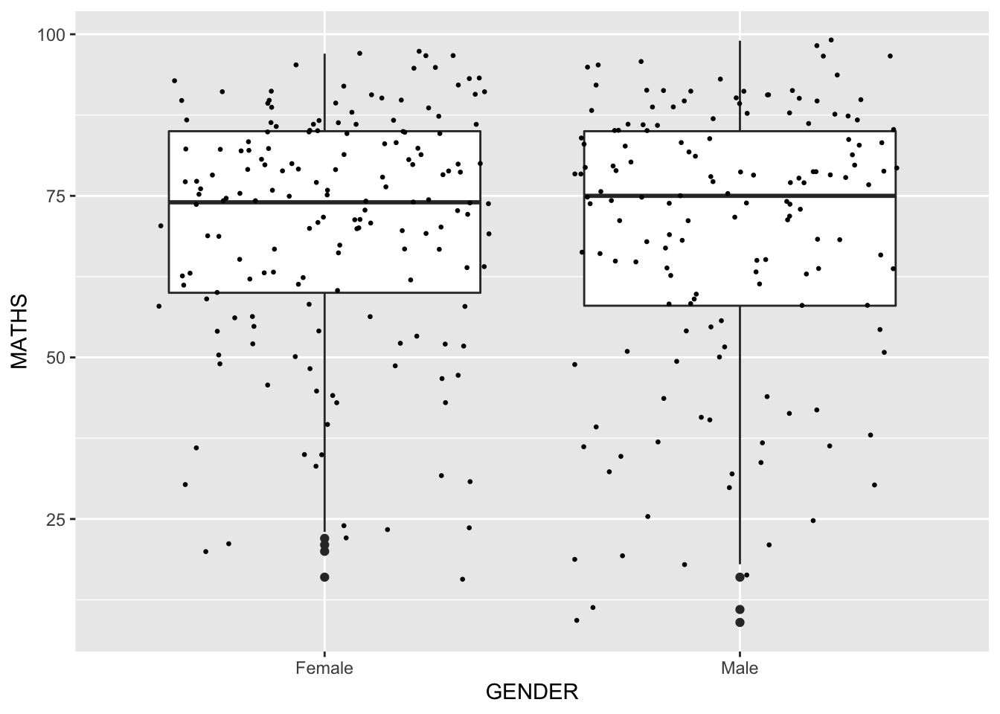
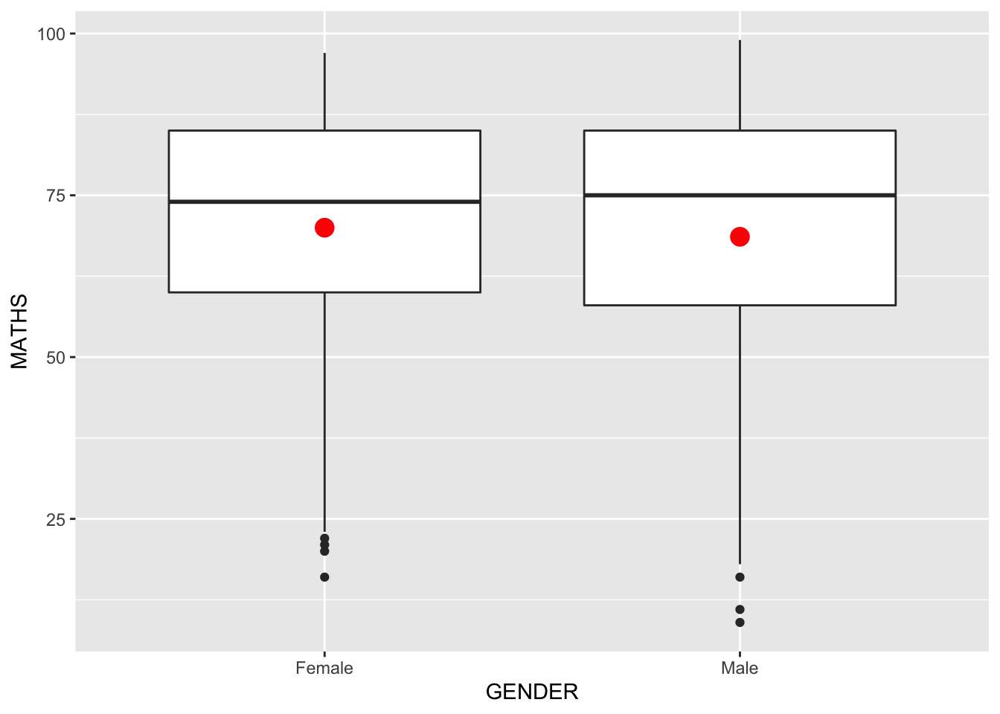
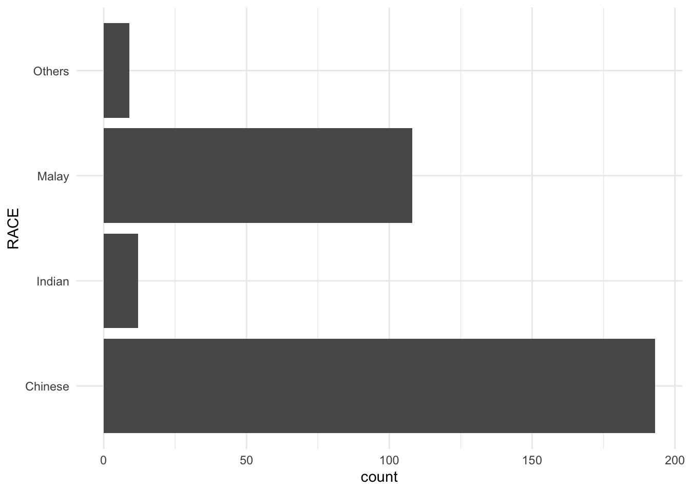

pacman::p_load(tidyverse)Hands_on Exercise 1
Getting Started
Install and launching R packages
The code chunck below uses p_load() of pacman package to check if tidyverse packages are installed in the computer. If they are, then they will be launched into R.
Importing the data
exam_data <- read_csv("data/Exam_data.csv")Rows: 322 Columns: 7── Column specification ────────────────────────────────────────────────────────
Delimiter: ","
chr (4): ID, CLASS, GENDER, RACE
dbl (3): ENGLISH, MATHS, SCIENCE
ℹ Use `spec()` to retrieve the full column specification for this data.
ℹ Specify the column types or set `show_col_types = FALSE` to quiet this message.Plotting a simple bar chart
ggplot(data = exam_data,
aes(x = RACE)) +
geom_bar()
R Graphics VS ggplot R Graphics
hist(exam_data$MATHS)
ggplot
ggplot(data=exam_data, aes(x = MATHS)) +
geom_histogram(bins=10,
boundary = 100,
color="black",
fill="grey") +
ggtitle("Distribution of Maths scores")
Grammar of Graphics
Data
ggplot(data=exam_data)
Aesthetic mappings
ggplot(data=exam_data,
aes(x= MATHS))
Geom
Geometric Objects: geom_bar
ggplot(data=exam_data,
aes(x=RACE)) +
geom_bar()
Geometric Objects: geom_dotplot
ggplot(data=exam_data,
aes(x = MATHS)) +
geom_dotplot(dotsize = 0.5)Bin width defaults to 1/30 of the range of the data. Pick better value with `binwidth`.
ggplot(data=exam_data,
aes(x = MATHS)) +
geom_dotplot(binwidth=2.5,
dotsize = 0.5) +
scale_y_continuous(NULL,
breaks = NULL) 
Geometric Objects: geom_histogram()
ggplot(data=exam_data,
aes(x = MATHS)) +
geom_histogram() `stat_bin()` using `bins = 30`. Pick better value with `binwidth`.
Modifying a geometric object by changing geom()
ggplot(data=exam_data,
aes(x= MATHS)) +
geom_histogram(bins=20,
color="black",
fill="light blue") 
Modifying a geometric object by changing aes()
ggplot(data=exam_data,
aes(x= MATHS,
fill = GENDER)) +
geom_histogram(bins=20,
color="grey30")
Geometric Objects: geom-density()
ggplot(data=exam_data,
aes(x = MATHS)) +
geom_density() 
ggplot(data=exam_data,
aes(x = MATHS,
colour = GENDER)) +
geom_density()
Geometric Objects: geom_boxplot
ggplot(data=exam_data,
aes(y = MATHS,
x= GENDER)) +
geom_boxplot() 
ggplot(data=exam_data,
aes(y = MATHS,
x= GENDER)) +
geom_boxplot(notch=TRUE)
Geometric Objects: geom_violin
ggplot(data=exam_data,
aes(y = MATHS,
x= GENDER)) +
geom_violin()
Geometric Objects: geom_point()
ggplot(data=exam_data,
aes(x= MATHS,
y=ENGLISH)) +
geom_point() 
geom objects can be combined
ggplot(data=exam_data,
aes(y = MATHS,
x= GENDER)) +
geom_boxplot() +
geom_point(position="jitter",
size = 0.5) 
Essential Grammatical Elements in ggplot2: stat
Working with stat()
ggplot(data=exam_data,
aes(y = MATHS, x= GENDER)) +
geom_boxplot()
Working with stat - the stat_summary() method
ggplot(data=exam_data,
aes(y = MATHS, x= GENDER)) +
geom_boxplot() +
stat_summary(geom = "point",
fun.y="mean",
colour ="red",
size=4) Warning: `fun.y` is deprecated. Use `fun` instead.
Working with stat - the geom() method
ggplot(data=exam_data,
aes(y = MATHS, x= GENDER)) +
geom_boxplot() +
geom_point(stat="summary",
fun.y="mean",
colour ="red",
size=4) Warning: Ignoring unknown parameters: fun.yNo summary function supplied, defaulting to `mean_se()`
Adding a best fit curve on a scatterplot
ggplot(data=exam_data,
aes(x= MATHS, y=ENGLISH)) +
geom_point() +
geom_smooth(size=0.5)`geom_smooth()` using method = 'loess' and formula 'y ~ x'
ggplot(data=exam_data,
aes(x= MATHS,
y=ENGLISH)) +
geom_point() +
geom_smooth(method=lm,
size=0.5)`geom_smooth()` using formula 'y ~ x'
Essential Grammatical Elements in ggplot2: Facets
Working with facet_wrap()
ggplot(data=exam_data,
aes(x= MATHS)) +
geom_histogram(bins=20) +
facet_wrap(~ CLASS)
facet_grid() function
ggplot(data=exam_data,
aes(x= MATHS)) +
geom_histogram(bins=20) +
facet_grid(~ CLASS)
Essential Grammatical Elements in ggplot2: Coordinates
Working with Coordinate
ggplot(data=exam_data,
aes(x=RACE)) +
geom_bar()
ggplot(data=exam_data,
aes(x=RACE)) +
geom_bar() +
coord_flip()
Changing the y- and x-axis range
ggplot(data=exam_data,
aes(x= MATHS, y=ENGLISH)) +
geom_point() +
geom_smooth(method=lm, size=0.5)`geom_smooth()` using formula 'y ~ x'
ggplot(data=exam_data,
aes(x= MATHS, y=ENGLISH)) +
geom_point() +
geom_smooth(method=lm,
size=0.5) +
coord_cartesian(xlim=c(0,100),
ylim=c(0,100))`geom_smooth()` using formula 'y ~ x'
Essential Grammatical Elements in ggplot2: themes
Working with theme
ggplot(data=exam_data,
aes(x=RACE)) +
geom_bar() +
coord_flip() +
theme_gray()
ggplot(data=exam_data,
aes(x=RACE)) +
geom_bar() +
coord_flip() +
theme_classic()
ggplot(data=exam_data,
aes(x=RACE)) +
geom_bar() +
coord_flip() +
theme_minimal()